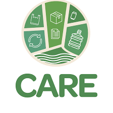

A Cooperativa dos Agentes Autônomos de Reciclagem de Aracaju (Care) foi instituída no âmbito do Projeto Lixo e Cidadania em Sergipe, coordenado pelo Ministério Público de Sergipe, em parceria com o Unicef, Universidade Federal de Sergipe, Prefeitura de Aracaju.
A implantação da cooperativa teve como objetivo principal a inclusão social dos catadores mediante a construção de uma unidade produtiva para o beneficiamento e comercialização de material reciclável, o que permitiu condições mais dignas de trabalho e melhoria no nível de renda das famílias que desenvolviam atividades de catação no antigo “lixão” da Terra Dura, localizado no Bairro Santa Maria.